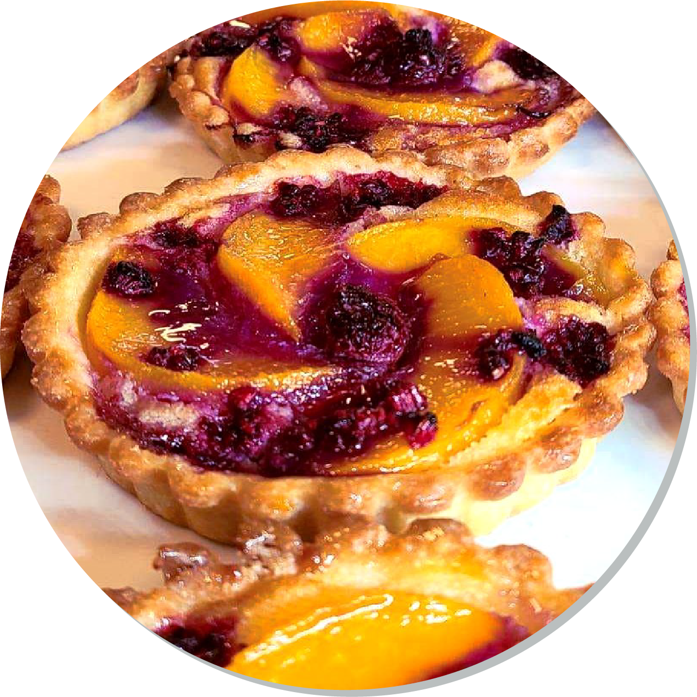

About the Bakery
Wemakeall of our food from scratch, ranging from authentic French baked goods to an assortment of American offerings, and we're proud to provide locally sourced items,and premium organic coffees courtesy of Backroads Coffee.
Our creations range from buttery croissants and flaky pain au chocolat to elegant tarts, éclairs, and macarons. Often featuring rich, smooth fillings like pastry cream, ganache, or fruit compotes, patisserie treats are known for their light, airy textures and carefully crafted layers. The balance of sweetness and subtle complexity in each bite reflects a tradition of craftsmanship passed down through generations.
About the Bakery
Established in 1987, Backroads Coffee & Tea began as a small community coffee shop. At the forefront of the 2nd wave specialty coffee movement, Backroads Coffee & Tea offered the Hayward community craft-made specialty coffee beverages, small-batch roasted coffees, and an assortment of imported fine teas. Backroads Coffee & Tea thrived throughout the early nineties roasting specialty coffees for their own use, as well as, offering their customers the ability to purchase their coffees through mail order or direct in-house.

Hours
Monday - Thursday: 5am to 4pm
Friday: 6am to 4pm
Saturday: 6am to 6pm
Sunday: Closed

The Goods


Turtle Danish

Macarons

Strawberry Meringue

Peach & Raspberry Tart
Chocolate & Raspberry Tart

Fresh Fruit & Lemon Custard Tart